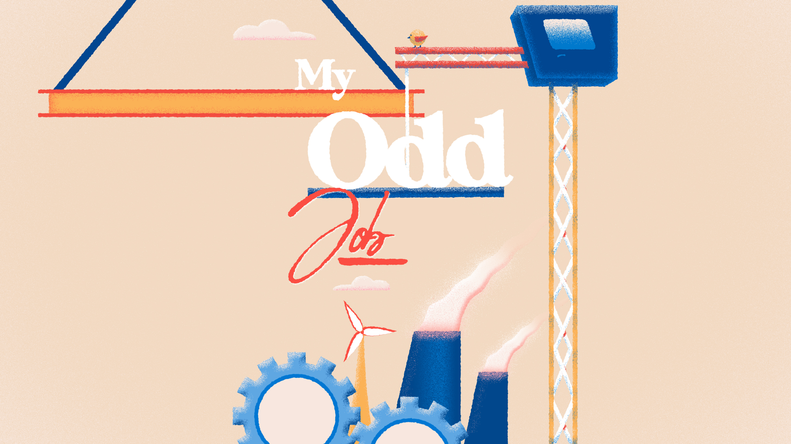

Headspace
Guided Meditations
A series of looping animations to play alongside guided meditations.
Each of the 4 final scenarios were completed between 1-2 working days.
A compliation can be seen at the beginning of my reel.
Here's a few concept sketches for each week.


Client: Metro / Headspace
My Odd Job
Social Media Promo
An Instagram Stories stinger to advertise Metro's series on weird workplaces.
Tools: After Effects

Client: Metro

Pond Time
Personal Work
I originally worked on this to try and get a blend between realistic and cartoonish water.
This included experimenting with combining grain and gradients, generating random reactive shapes for the as well as displacement tools for ripples.